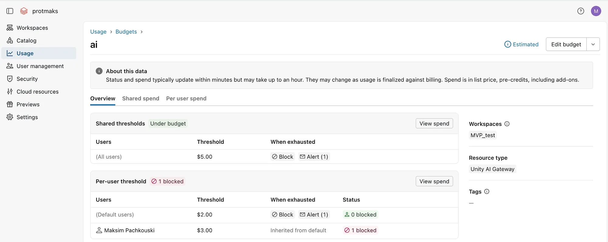
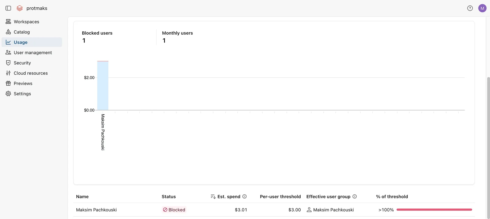
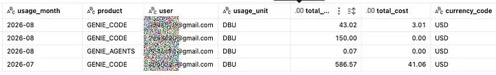
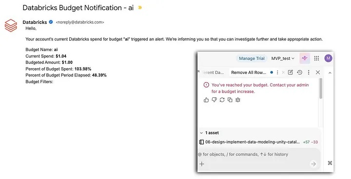

Genie usage can start small and grow quickly when a new capability is available to many people. A notification budget gives the administrator visibility, but it does not prevent more usage after the notification arrives.
Databricks Genie budgets can now include a blocking action. When the configured threshold is reached, users covered by that budget can no longer submit new Genie requests. This gives teams a hard limit as well as an alert.
Choose the scope before the amount
Start by deciding who shares a limit. The budget settings support a shared threshold across the users and workspaces in the budget, a default per-user threshold, and an override for a named user or group.
Shared threshold
One limit for a budgetUse it to cap total Genie spend for the group of users and workspaces covered by the budget.
Per-user threshold
Limits tailored to accessSet a default, then give selected users or groups a different limit where there is a clear need.
Test with a small value in a non-production budget. Usage data and the cost dashboard can update later than the enforcement action. Check that the user is blocked when the threshold is crossed, then raise the limit and confirm that access returns.
Configure the budget block
- Create or open a Genie budget in the Databricks account console.
- Set the shared budget or per-user threshold in the currency and period you want to control.
- Add an alert so administrators know when the threshold is reached.
- Add the Block usage action for the threshold.
- Test with a pilot user or group before applying the policy to the wider workspace.

Be precise when user and group rules overlap. A rule for a group can determine the limit applied to a member, even if that member also has an individual entry. Test the exact combinations used in your account.

Review Genie spend in system tables
Use system.billing.usage with system.billing.list_prices to review Genie usage by month, surface and user. The query below filters the usage records where the billing origin product is GENIE.
SELECT
DATE_FORMAT(u.usage_date, 'yyyy-MM') AS usage_month,
u.usage_metadata.genie.surface AS product,
u.identity_metadata.run_as AS user,
u.usage_unit,
ROUND(SUM(u.usage_quantity), 2) AS total_dbus,
COALESCE(ROUND(SUM(u.usage_quantity *
COALESCE(p.pricing.effective_list.default, p.pricing.default)), 2), 0) AS total_cost,
COALESCE(p.currency_code, 'USD') AS currency_code
FROM system.billing.usage u
LEFT JOIN system.billing.list_prices p
ON u.sku_name = p.sku_name
AND u.cloud = p.cloud
AND u.usage_start_time >= p.price_start_time
AND (p.price_end_time IS NULL OR u.usage_start_time < p.price_end_time)
WHERE u.billing_origin_product = 'GENIE'
GROUP BY ALL
ORDER BY usage_month DESCThis report is useful for monthly review and for identifying who needs a different threshold. Do not treat it as the enforcement signal. The budget block can take effect before the cost dashboard or system-table view reflects the latest usage.

Automation needs validation
The Databricks CLI can list budgets and export an individual budget as JSON. This is useful for inventory and for preparing repeatable changes. Validate any update in a test account first. Preview-era CLI support may not include every configuration needed for Genie blocking, including the Unity AI Gateway resource type.
databricks account budgets list \
--profile databricks-account
databricks account budgets get <budget-id> \
--profile databricks-account \
-o json > genie-budget.jsonA safe operating pattern
- Set a modest shared limit for the first month of use.
- Use a default per-user limit to prevent one account from consuming the full budget.
- Give higher limits only to named roles, groups or people with a documented need.
- Enable both notification and blocking actions.
- Review blocked users and actual usage each month, then adjust limits deliberately.

Budgets work best when they are part of an access and review process. A block prevents surprise spend. The usage report explains what happened and helps the team choose the next threshold.